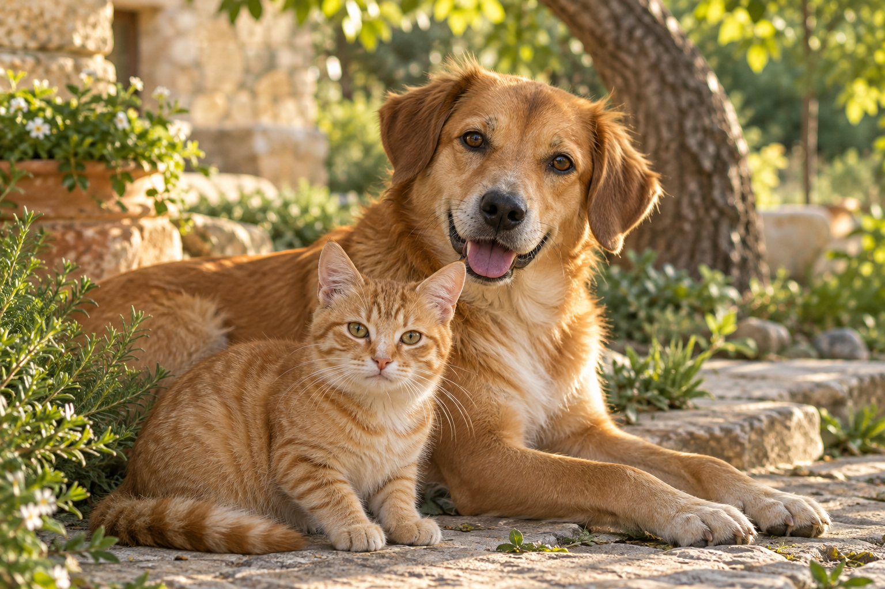

PATİ DOSTLARININ BULUŞMA NOKTASIOnların dünyasını,
birlikte
güzelleştirelim.
Bir kap mama, bir yudum su, biraz sevgi.
Küçük iyiliklerle büyük bir değişimin parçası ol.
Hayvan sevgisiyle. Gönüllülükle. Birlikte.

Her patinin güzel bir güne hakkı var.
İyilik bulaşıcıdır.Seninle başlar, birlikte büyür.
bir pati
bir dünya
01Bir iyilik seçGünlük görevlerle başla.
02Hikâyeni paylaşBir başkasına ilham ol.
03İyiliği büyütDostlarınla daha fazlasını yap.
BİR ARADA, DAHA GÜÇLÜ
Küçük bir adım.
Gerçek bir fark.
İyilik yapmak karmaşık olmak zorunda değil.
PatimiKoru, nereden başlayacağını gösterir.
GÜNLÜK GÖREVLERBugün bir patiye
dokun.
Mahallendeki dostların için küçük, uygulanabilir görevler seç.
TOPLULUKİyiliğin yalnız
kalmasın.
Hikâyeni paylaş. Hayvanseverlerle tanış. Birbirinize ilham olun.
PATİ ROZETLERİHer iyiliğin
bir izi olsun.
Görevlerden Pati puanı kazan, seni anlatan rozetleri biriktir.
İYİLİĞE HEMEN BAŞLA
Bugün ne yapabilirsin?
SEN DE BU HİKÂYENİN PARÇASI OL
İyi ki varsın.
İyi ki birlikteyiz.
Bir pati için başlayan iyilik,
bir topluluğun hikâyesine dönüşür.
İYİLİĞİN YENİ ADRESİ
Birlikte daha
güzel bir dünya.
TEKRAR HOŞ GELDİN
İyilik seni
bekliyor.
YÖNETİCİ ALANIYönetici girişi
BUGÜNÜN İYİLİKLERİİyi ki buradasın, Pati dostu.
Bir dostumuzun gününü güzelleştirmeye hazır mısın?
BUGÜN BİR FARK YARATBir kap mama.
Bir dünya sevgi.
Küçük bir iyilik, bir patinin tüm gününü değiştirir.
Günün görevlerini gör İYİLİK KUMBARAN0
Pati puanın
Günün görevleri0 / 4
Her iyilik bir adımla başlar.Bugünün görevleri
Bir görev seç. Fotoğrafınla hikâyeni tamamla.
İYİLİK PAYLAŞTIKÇA BÜYÜRPatilerin hikâyeleri.
Bir iyilik paylaş. Bir başkasının ilk adımına ilham ol.
İYİLİĞİNİN HATIRASIPati mağazası.
Pati puanlarınla seni anlatan rozetler ve avatarlar biriktir.
0 Pati
Burada para geçmez. Her şey, yaptığın iyiliklerle kazanılır.
AYNI SEVGİDE BULUŞALIMİyilik dostların.
Tanış, sohbet et, bir sonraki iyiliği birlikte planla.
Dostlarım
Birlikte iyiliğe
KÜÇÜK BİR MOLABiraz oyun, bolca pati.
Hafızanı tazele, dostlarımızı eşleştir.
PATİ HAFIZA OYUNUİki pati, bir eşleşme.
45 saniyede 10 çifti bul.
Tamamlarsan iyilik kumbarana 100 Pati eklenir.
45 saniye +100 PatiGünde 1 oyun
BİR PATİ YARDIM BEKLİYORSADoğru desteğe ulaş.
Destek hatları ve yakınındaki veterinerlere hızlı erişim.
YAKININDAKİ DESTEKEn yakın
veteriner kliniği.
Bulunduğun konuma göre çevrendeki klinikleri haritada gör.
Diyarbakır Hayvanları Koruma Hattı
Sokak hayvanları için ihbar ve bildirim hattı.
0412 229 50 50112 Acil Çağrı Merkezi
Acil çağrı numarasına hızlı erişim.
112
BU HİKÂYEDE SEN DE VARSINBenim iyilik alanım.
İyiliklerin, rozetlerin ve sana ait küçük bir köşe.
İYİLİK, BİR PATİYLE BAŞLAR.

Pati gönüllüsüAd Soyad
@kullaniciadi
0Pati puanı
0Bugünkü iyilik
İyiliğimin hatıraları
Kazandığın rozetler ve özel avatarların.
Şikayetler & moderasyon
Topluluktan gelen fikirler